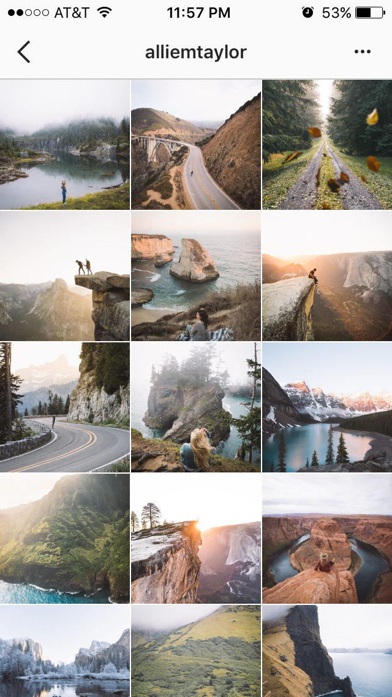
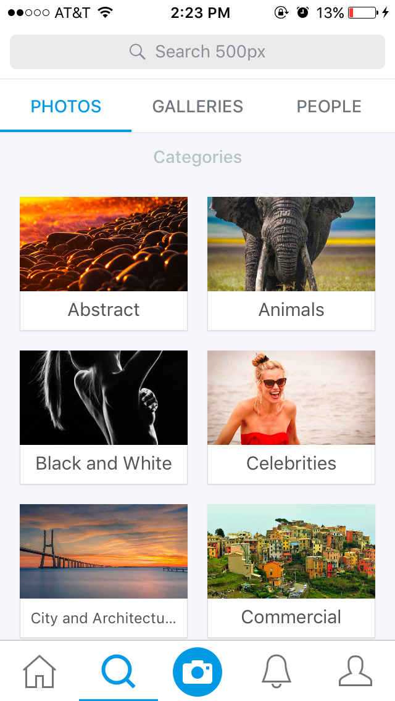
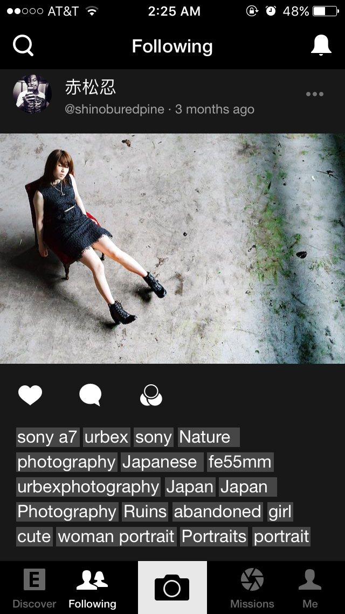
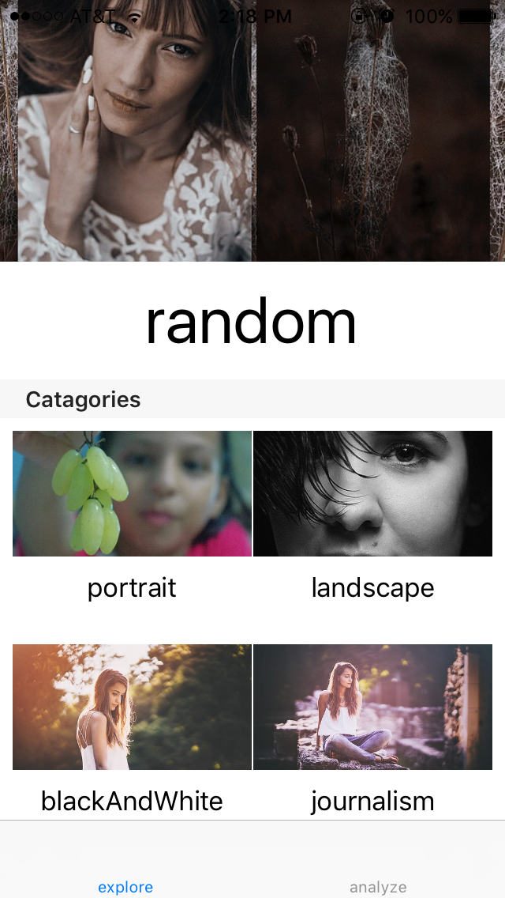
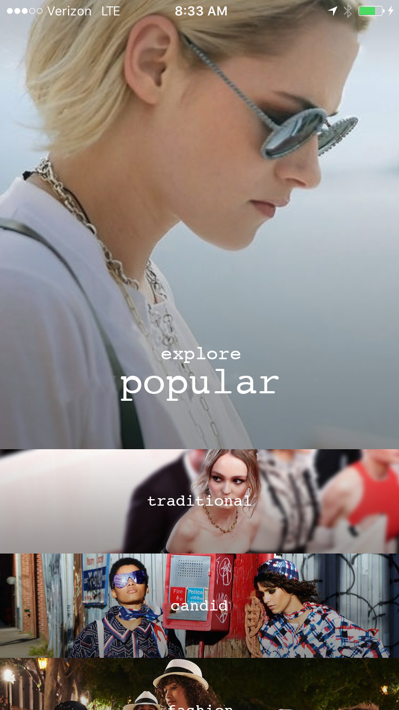
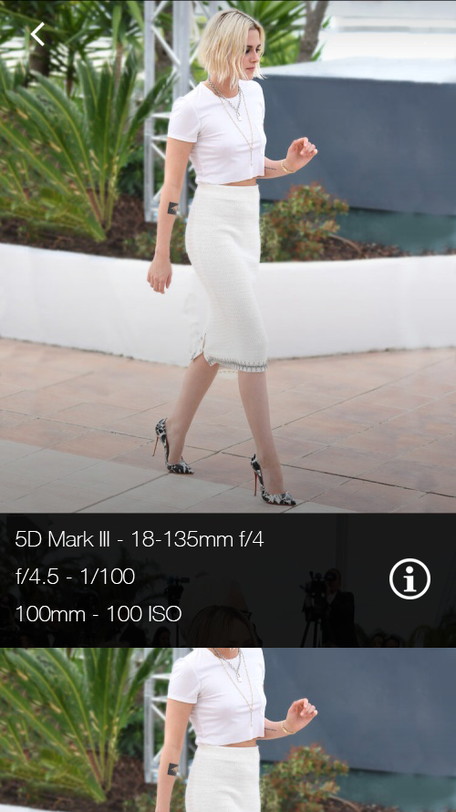

I love photography. But, I do not enjoy it so much when I am out ideas on the field. Telling the model to stand still for me to think and walk around could become really awkward. Somtimes, the “feeling” just does not flow into us. This project serves to solve that issue.
Table of Content
Logic Overview
Why current apps are not working?
Because I often run out of ideas for poses or framing while taking portraits and since the app is for photographers with similar issue, it will request and collect only different kinds of portraits. But, what are the problems with the apps that are already out there? Why can’t I just use them instead? Let’s inspect both the content and the GUI of some of the most popular apps currently on Apple Store.

This looks fine, right?
Well, not really. Here is why:
Firstly, professionals do not post their photographs on Instagram and when they do, the quality is horrible. We cannot zoom in and most of the images are in 1:1 ratio (I will save the argument on why rectangular is not favourable for later).
Also, there is no way to see the camera EXIF information. When most photographers check a photo, they immedietely look for the shuttle speed, aperature, etc (here is a professional suggesting how important EXIF is in his series). Instagram does not have such feature.
How about exploring new images on Instagram? You can try and search for the tag “portrait”, the results are just teenagers taking selfies. Even if we use instagram’s API to filter out the result, the two above problems still exist.
After all, Instagram is not really intended for photographers anyway. So, it quite unfair to disect the app, but, analyzing a bad example is a good way to set expectations for the app.
Flickr
Although more professional post their photographs on here and we can actually see the EXIF information. It is not easy to access the EXIF info, we have to navigate through another screen to read more information. I want to design an application that displays the photo with the EXIF information.
Flickr faces problems similarly to Instagram. It does not really offer an option for photographers to discover images. There is a feature that lists all trending tags. But, I do not want trending stuff, I just want to look for a specific set of stuff. In this case, we are trying to find only portraits.
Since Flickr still has some decent photographs and EXIF information, it is still a good source for inspiration. In fact, our app will ultilize Flickr’s API and collect photos from here. But, we will have to add some filter to get a good image.
500px

500px is my favourite.
Why?
It actually categorizes the pictures! Also, the quality of the photographs is absolutely stunning. Unfortunately, similarly to Flickr, I cannot access the EXIF data without going to another screen. 500px is close, but, for our taste, it is not close enough. In our app, we will have these categories and also use their API to get the pictures.
EyeEm
EyeEm is actually a little bit special. It main feature is suggesting users to explore specific photographers or albums based on our interests. So, machine learning is definately heavily involved in there. Since this is the main feature of EyeEm, it does not categories photographs like what 500px does. However, EyeEm has a very interesting way to show image:

From the screenshoot above, we can see the picture’s tags below the photograph. This is semi helpful because sometimes we can see the information of the camera. For example, we instantly know that it is captured with a Sony A7 and at 55mm. But, we do not really want to see all those information. Firstly, it is distracting. There are too many taggs. If I were to redesign the application, I would show only a few of them. And, I will never show the obvious tags. “Girl”, “cute”, and “portrait” are not neccessary. Without reading the tags, I am pretty sure that there is a girl in the picture. Anyway, displaying helpful information is what our app is going for.
Getting the images
(cont.)
Suggesting songs
(cont.)
Deliverable Diary
(cont.)
First week: “Fake It Till You Make It”
The first week was bad.
I trashed the entire GUI of the app.
Why? Take a look for yourself:

So, what really happened? Let’s begin from the start.
What happen?
To be honest, I had not experience network programming before. So, this application was what I had not done before. After settling down with the idea, I watched several tutorials about iOS networking (mostly on Udacity). After spending out about 6 hours cramming down the materials, I go straight to the project.
The app is straight foward, sending http request and receiving a JSON package with pictures’ URLs back. I had no difficult in implement the code for this part. However, it took me actually a lot of time to set up the GUI and to display the photos.
I had absolutely no design in mind.
(cont.)

